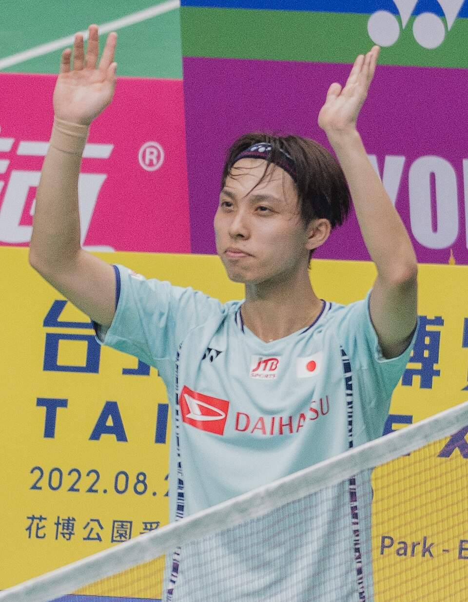

ラケット競技
•
バドミントン / 男子シングルス
ならおか こうだい
奈良岡 功大
Kodai Naraoka
🏢 所属: NTT東日本
🏅 世界選手権銀メダル🏅 BWFワールドツアーファイナルズ準優勝🏅 世界ランキング上位
驚異の持久力と相手の意表を突く配球。どんなシャトルも拾い続ける日本バドミントンの若きエース
愛知・名古屋2026 今大会最終結果
銅メダル 🥉
3位決定戦: 2-1（試合時間84分）
80分を超える超ロングラリーの死闘を驚異的なスタミナとフットワークで勝ち抜いた。不屈のメンタルで日本の男子シングルスにメダルをもたらした。
🎬 最後のシーン（決定的瞬間・ハイライト）
最後はライン際への鋭いドロップショット。シャトルが落ちた瞬間、全てを出し切って大の字に倒れ込んだ劇的フィニッシュ。
▶️ 【YouTube】84分の死闘の末、最後の一撃を決めてコートに倒れ込んだ歓喜 を見る
経歴・これまでの歩み
父・浩監督のもと5歳でラケットを握り、小学生時代から全国大会を総なめにする。浪岡高校から日本大学を経てFWD富士生命、NTT東日本へ。2023年コペンハーゲン世界選手権で男子シングルス銀メダルを獲得。BWFワールドツアーでも世界の強豪を撃破し続けている。
主要大会ハイライト戦績
2024年
パリオリンピック
男子シングルス ベスト16
2023年
コペンハーゲン世界選手権
男子シングルス 銀メダル
2023年
全英オープン
ベスト4
プレイスタイル＆世界を制する武器
コートの四隅を突く正確無比なクリア・ドロップと、どんな難球も体勢を崩さず返球する鉄壁のレシーブ。相手のミスを誘う頭脳的なラリー構築が真骨頂。
専門家・メディアによる客観的分析・批評
✨
強み・世界トップ水準の評価
数十往復に及ぶ過酷なラリー戦でも足を止めず、相手のミスを誘う精密無比な配球と鉄壁のレシーブ力は世界バドミントン界屈指のスタミナ。
出典・ソース:
BWF（世界バドミントン連盟） / 陣内貴美子氏
⚠️
課題・懸念される客観的事実
ディフェンス主体の展開が多いため試合時間が長時間化し体力を削られる点、自分から一撃で仕留める決定的なジャンピングスマッシュの決定力不足。
出典・ソース:
バドミントンマガジン
愛知・名古屋2026への決意とメッセージ
大会スケジュール＆観戦のツボ
🗓️ 出場予定日程・会場
2026年9月26日〜10月3日（愛知県一宮市総合体育館）
👀 観戦の注目ポイント
1ラリー数十往復にも及ぶ極限の持久戦と、シャトルの落下地点へ瞬時に潜り込むフットワーク。